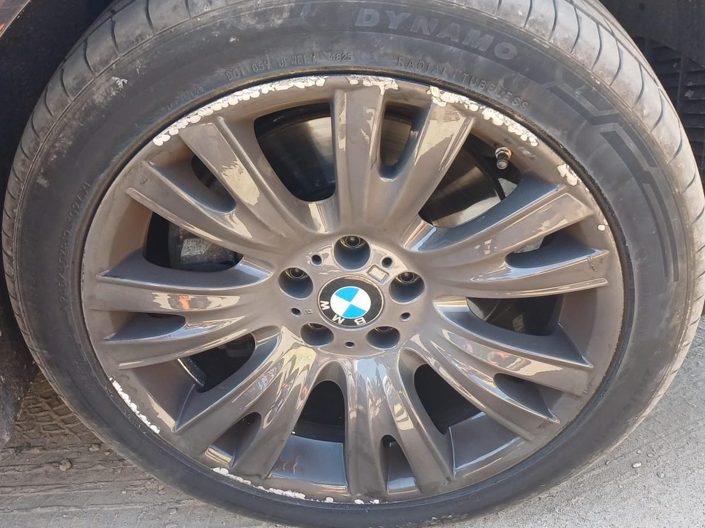

W skrócie: rozmiar znajdziesz na boku opony, np. 205/55 R16 91V. Pierwsze trzy liczby to wymiary, a końcówka (91V) mówi, jakie obciążenie i prędkość opona wytrzyma.
Rozkładamy oznaczenie na części
| Znak | Co oznacza |
|---|---|
| 205 | Szerokość opony w milimetrach |
| 55 | Profil — wysokość boku opony jako procent szerokości (tu: 55% z 205 mm) |
| R | Konstrukcja radialna (dziś praktycznie wszystkie opony osobowe) |
| 16 | Średnica felgi w calach |
| 91 | Indeks nośności — 91 to maks. 615 kg na jedną oponę |
| V | Indeks prędkości — V to maks. 240 km/h |
Najczęstsze indeksy prędkości
T — 190 km/h · H — 210 km/h · V — 240 km/h · W — 270 km/h · Y — 300 km/h. Nowe opony powinny mieć indeks nośności i prędkości nie niższy niż te, które przewidział producent auta.
Inne oznaczenia na boku opony
- DOT 2321 — data produkcji: 23. tydzień 2021 roku
- 3PMSF (płatek śniegu na tle góry) — opona zimowa z potwierdzonymi właściwościami na śniegu
- M+S — błoto i śnieg; sam ten napis nie oznacza pełnoprawnej opony zimowej
- XL lub Reinforced — opona wzmocniona, o większej nośności
- RFT, ROF, SSR, ZP — opona run-flat, na której można dojechać po przebiciu
Gdzie znaleźć właściwy rozmiar dla swojego auta?
Najszybciej — na boku opon, które masz założone. Rozmiary dopuszczone przez producenta znajdziesz też na naklejce w drzwiach kierowcy, na klapce wlewu paliwa albo w instrukcji obsługi. Jeśli nie jesteś pewien, zrób zdjęcie boku opony i wyślij nam na WhatsApp — sprawdzimy.
Potrzebujesz pomocy z oponami? Przyjedziemy pod dom, do pracy albo na parking — w Gdyni, Sopocie, Gdańsku i okolicach.